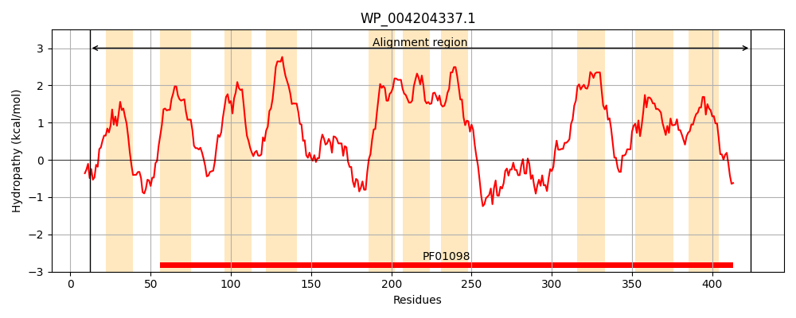
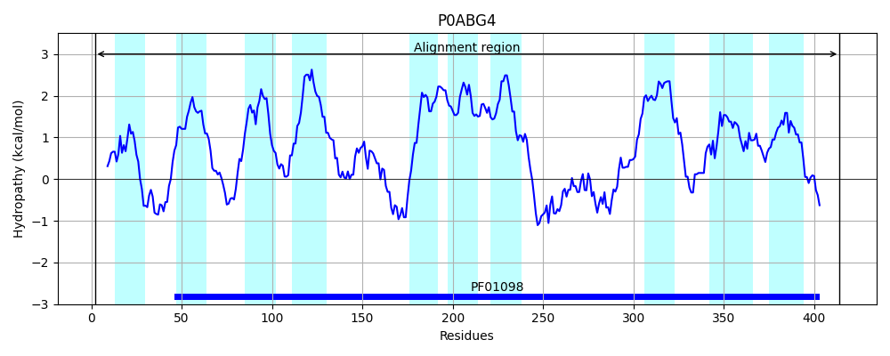
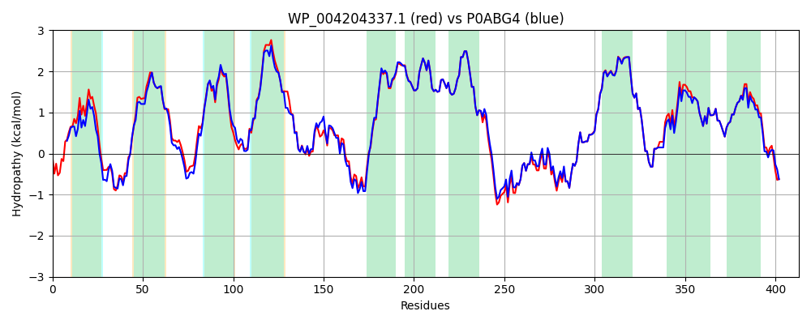

Hit Accession: P0ABG4
Hit TCID: 2.A.103.1.1
Hit Description: gnl|BL_ORD_ID|8702 gnl|TC-DB|P0ABG4|2.A.103.1.1 Cell division protein ftsW - Escherichia coli.
Mach Len: 413
e:0.000000
Query TMS Count : 10
Hit TMS Count: 10
TMS-Overlap Score: 9.350000
Predicted Substrates:CHEBI:61496;alpha-D-FucNAc4-(1->4)-beta-D-ManNAcA-(1->4)-D-GlcNAc-undecaprenyl diphosphate(3-)
BLAST Alignment:
Score: 1911 , Bit scores: 740 bits, E-value: 0.0e+00, Alignment length: 413, Percentage identity: 89
Query: 12 QLSLPRLRLPRLPGMFIFAWLFAALKGWVMGSRPKDNDSLVMYDRMLLWLTFGLAAIGFIMVTSASMPVGQRLANDPFLFAKRDGLYIVLAFVLALVTLRLPMDFWQRHSTAMLIASIVMLLIVLVVGSSVNGASRWIALGPLRIQPAEFTKLSLFCYIANYLVRKADEVRNNLRGFLKPMGVIFVLAILLLAQPDLGTVVVLFVTTLAMLFLAGAKLWQFIAIIGMGISAVVLLILAEPYRIRRVTSFWNPWEDPFGSGYQLTQSLMAFGRGEMWGQGLGNSVQKLEYLPEAHTDFIFAIIGEELGYIGVVLALLMVFFVAFRAMSIGRKALEIDHRFSGFLACAIGIWFSFQALVNVGAAAGMLPTKGLTLPLISYGGSSLLIMSTAIMLLLRIDYETRLEKAQAFTRGVR 424
+LSLPRL++PRLPG I W+ ALKGWVMGSR KD DSL+MYDR LLWLTFGLAAIGFIMVTSASMP+GQRL NDPF FAKRDG+Y++LAF+LA++TLRLPM+FWQR+S ML+ SI++L+IVLVVGSSV GASRWI LG LRIQPAE TKLSLFCYIANYLVRK DEVRNNLRGFLKPMGVI VLA+LLLAQPDLGTVVVLFVTTLAMLFLAGAKLWQFIAIIGMGISAVVLLILAEPYRIRRVT+FWNPWEDPFGSGYQLTQSLMAFGRGE+WGQGLGNSVQKLEYLPEAHTDFIFAIIGEELGY+GVVLALLMVFFVAFRAMSIGRKALEIDHRFSGFLAC+IGIWFSFQALVNVGAAAGMLPTKGLTLPLISYGGSSLLIMSTAIM+LLRIDYETRLEKAQAF RG R
Sbjct: 2 RLSLPRLKMPRLPGFSILVWISTALKGWVMGSREKDTDSLIMYDRTLLWLTFGLAAIGFIMVTSASMPIGQRLTNDPFFFAKRDGVYLILAFILAIITLRLPMEFWQRYSATMLLGSIILLMIVLVVGSSVKGASRWIDLGLLRIQPAELTKLSLFCYIANYLVRKGDEVRNNLRGFLKPMGVILVLAVLLLAQPDLGTVVVLFVTTLAMLFLAGAKLWQFIAIIGMGISAVVLLILAEPYRIRRVTAFWNPWEDPFGSGYQLTQSLMAFGRGELWGQGLGNSVQKLEYLPEAHTDFIFAIIGEELGYVGVVLALLMVFFVAFRAMSIGRKALEIDHRFSGFLACSIGIWFSFQALVNVGAAAGMLPTKGLTLPLISYGGSSLLIMSTAIMMLLRIDYETRLEKAQAFVRGSR 414 | Protein Hydropathy Plots: |
|---|
|  |  |
Pairwise Alignment-Hydropathy Plot:
|
|---|
|  |